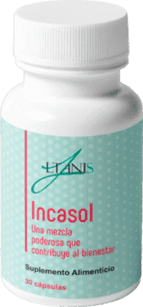

¿Qué se debe hacer para evitar el desarrollo de enfermedades cardíacas? ¿Cómo comportarse si sube la presión arterial? ¿A qué edad hay que controlar constantemente la presión arterial? Victoria González, especialista líder en enfermedades cardiovasculares nos va a hablar sobre el tratamiento adecuado de este tipo de enfermedades, su prevención y mucho más.
Periodista
Hola, ¿es cierto que la hipertensión es una de las enfermedades más comunes?
Doctora
Hola. Actualmente, sí. La hipertensión no solo significa una presión arterial alta, sino también un presagio de infarto de miocardio y derrame cerebral. Si la tratan incorrectamente y la dejan pasar pensando que aún son jóvenes, las consecuencias pueden ser nefastas.
Periodista
¿Cuál es el síntoma más común de la hipertensión?
Doctora
El dolor de cabeza y la presión arterial alta son los acompañantes más comunes de la hipertensión. Hay personas que no sienten ningún síntoma, o lo atribuyen a otras enfermedades.
Periodista
¿A qué edad comienza a desarrollarse la hipertensión arterial?
Doctora
Depende de la persona. Aconsejo a todos que comiencen a controlar su presión arterial
después de los 18 años. Tenemos en torno al 40% de adultos con hipertensión. Más de la mitad
de ellos no conocen la presión que tienen, ya que no la sienten. Y les puede jugar una mala
pasada. Dicha hipertensión latente y asintomática afecta al cerebro, el corazón, los riñones
y los ojos, e incluso puede producir complicaciones graves.
Por lo tanto, incluso
si no tienen quejas, pero tienen un trabajo nervioso o un ritmo de vida ajetreado, se
recomienda controlar la presión arterial al menos varias veces a la semana. Deben
controlarla después de los 30 años, especialmente si hay enfermedades concomitantes o una
predisposición genética.
Periodista
Acaba de decir que muchos pacientes no tratan adecuadamente la hipertensión. ¿Por qué?
Doctora
La presión arterial normal oscila entre los 120-130 y los 80-90. Muchos pacientes con hipertensión usan la dosis incorrecta de medicamentos o los fármacos en sí se seleccionan incorrectamente. Vienen a mi consulta y me dicen: "Me tomo pastillas para la presión arterial". Y yo pregunto: "¿Qué presión tiene?" "150…" Esto significa que el tratamiento fue seleccionado incorrectamente. Y luego resulta que ese medicamento fue recomendado en la farmacia o por un conocido. Y en la mayoría de los casos, se trata de fármacos peligrosos que no se pueden vender sin receta. O son incompatibles entre sí. Las consecuencias pueden ser muy peligrosas después de tomarlos. Por esta razón, la medicina de todo el mundo se está pasando a productos naturales que no dañan los tejidos de los órganos, y los ingredientes son compatibles con casi todos los medicamentos de origen sintético.
Periodista
¿Cómo evitar problemas con el sistema cardiovascular?
Doctora
Por supuesto, muchas enfermedades se pueden prevenir. En primer lugar, deben llevar un
estilo de vida activo y saludable. Es decir, nada de malos hábitos, alimentos grasos y
fritos. También tienen que hacer ejercicio, pero sin fanatismo, para que no haya una fuerte
tensión en los músculos y los vasos sanguíneos. Controlen su peso y alimentación. La dieta
debe contener fibra y un complejo vitamínico para mantener la función cardíaca.
Desafortunadamente, muchos no pueden seguir una dieta. Precisamente por esto, vienen al
rescate los complejos cardíacos naturales que mencioné anteriormente. Si toman productos
naturales para el corazón, retrasarán la aparición de complicaciones graves.
Periodista
Vaya, mi siguiente pregunta iba sobre dichos productos naturales. ¿Puede hablarnos más detalladamente de ellos?
Doctora
Es un tema muy amplio e importante. La ciencia ha demostrado la alta eficacia de los productos naturales. Además, debido a su composición, puede comprarlos cualquier persona. Pero muchas empresas han comenzado a ganar dinero con esto produciendo productos inútiles, y algunas incluso falsifican marcas conocidas, lo cual puede ser peligroso para la salud. Por lo tanto, yo siempre elijo fabricantes y productos de confianza.
Periodista
¿Podría nombrarlos?
Doctora
En la mayoría de los casos, aconsejo a mis pacientes . Me interesé por este producto cuando estuve en la última conferencia sobre cardiología. Estudié la investigación y lo introduje en mi práctica. De hecho, resultó ser el más efectivo de todos.
Periodista
¿En qué se diferencia del tratamiento convencional?
Doctora
Este producto actúa como vasodilatador, pero no afecta al músculo cardíaco, disolviendo los coágulos sanguíneos y restaurando el tono vascular y la elasticidad. Debido a esta propiedad, la presión arterial baja, pero el número de contracciones del miocardio y el volumen de eyección de la sangre no cambian. Además, reduce los niveles de azúcar en la sangre gracias a la celulosa de la uva. Y a diferencia de los fármacos sintéticos, este producto natural no genera adicción ni complicaciones.
Periodista
Es decir, ¿pueden tomar este producto todas las personas que tengan hipertensión?
Doctora
Sí. Fue desarrollado para personas con hipertensión y taquicardia al mismo tiempo. Los extractos naturales incluidos en su composición pueden eliminar rápidamente el agua estancada en el cuerpo, lo que contribuye a una circulación sanguínea normal. Los minerales y las vitaminas ayudan a reponer la pérdida de oligoelementos y evitan la formación de coágulos de sangre. Otra propiedad importante de es que calma el sistema nervioso y previene las subidas repentinas de presión arterial. En cualquier etapa de la hipertensión, su sobrecarga está contraindicada.
Periodista
¿Cuándo se siente mejor el paciente?
Doctora
El resultado depende de las características individuales del cuerpo, la edad y el grado de hipertensión. Según los datos de mis pacientes, puedo decir que el tinnitus, los dolores de cabeza y el insomnio se pasan al quinto día. Esto significa que la presión arterial se ha normalizado. Hay que completar un ciclo de tratamiento con este producto.
Periodista
¿Qué consejo podría darnos para mantener sano el corazón?
Doctora
Quiero resaltar algunas reglas básicas:
- Lleven un diario de presión arterial y anoten los indicadores todos los días.
- Traten de comer sano y consumir menos sal.
- Mantengan su peso dentro del rango normal.
- Realicen actividad física moderada. Lo importante es seleccionar el régimen óptimo.
- Traten de estar menos nerviosos.
- Dejen los malos hábitos.
- Tomen complejos para el corazón que contengan las sustancias necesarias para su buen funcionamiento. Quiero recordarles que no solo es adecuado para el tratamiento, sino también para la prevención.
Doctora
Gracias por invitarme. Debido a la situación relacionada con la falsificación de medicamentos populares, les aconsejo que compren este producto en el sitio web del fabricante. Esto les protegerá de la compra de un producto de baja calidad. Además, por lo que sé, ofrecen un buen descuento en la primera orden.